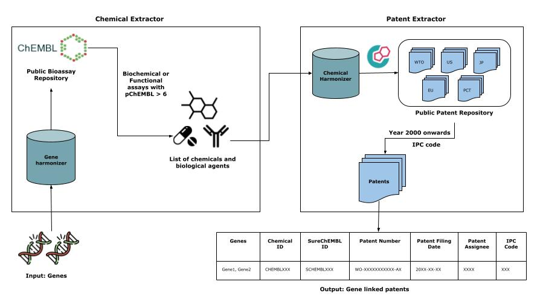

Welcome to PEMT’s documentation!
Release notes : https://github.com/Fraunhofer-ITMP/PEMT/releases


PEMT: A patent enrichment tool for drug discovery.
PEMT takes a two-step approach to collect patent documents relevant for drug discovery.
The
chemical_extractormodule extraction of chemicals that directly regulate (i.e. activation or inhibition) genes of interest based on functional or biochemical assays found within ChEMBL.The
patent_extractormodule interlinking these chemicals to patent documents by systematically querying SureChEMBL, a patent database.
General info
PEMT is a patent extractor tool that enables users to retrieve patents relevant to drug discovery. The framework is depicted in the graphic below

Installation
You can install PEMT package from pypi.
# Use pip to install the latest release
$ python3 -m pip install pemt
You may instead want to use the development version from Github, by running
$ python3 -m pip install git+https://github.com/Fraunhofer-ITMP/PEMT.git
For contributors, the repository can be cloned from GitHub and set up with uv:
$ git clone https://github.com/Fraunhofer-ITMP/PEMT.git
$ cd PEMT
$ uv sync
$ uv run pytest
Dependency
Python 3.10+
Mandatory
Pandas
CheMBL Webresource
DuckDB (to query the SureChEMBL bulk data)
For API information to use this library, see the Developmental Guide.
Issues
If you have difficulties using PEMT, please open an issue at our GitHub repository.
Disclaimer
PEMT is a scientific tool that has been developed in an academic capacity, and thus comes with no warranty or guarantee of maintenance, support, or back-up of data.